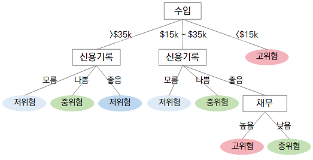

1.2 의사결정나무 구성요소

의사결정나무는 나무 형태로 의사결정 규칙을 표현하는 방식으로 데이터를 분류(classification)하거나 예측(prediction)하는 분석기법이다. 나무(tree) 구조로 모형이 표현되기 때문에 해석이 용이하고 나무 구조로부터 어떤 입력변수가 목표변수를 설명하기 위하여 더 중요한지를 쉽게 파악할 수 있다. (최종후, 서두성 (1999), 데이터마이닝 의사결정나무의 응용, 통계분석연구 제4권 제1호, p.62; 최종후 외 (2000), Answer Tree를 이용한 데이터마이닝 의사결정나무분석, SPSS 아카데미; 오올임, 김구 (2002), 불확실성 상황에서의 의사결정 양상에 관한 실증적 연구, 한국행정학보, 36-3, p.82에서 재인용)
의사결정나무의 장점은 분석과정이 이해하기 쉬우며 어느 변수가 상대적으로 더 중요한지 파악할 수 있다는 점이다. 또한 양적 변수와 질적 변수를 모두 사용할 수 있다.
의사결정나무의 단점은 상대적으로 모델이 불안정하다는 점이다. 즉 high-variance(=low bias)한 성질을 갖고 있다. 의사결정나무는 가지의 깊이가 커질수록 훈련 데이터에 과적합(over-fitting)될 가능성이 높다. 과적합하게 되면 훈련 결과는 매우 잘 나오지만 검증 결과는 잘 나오지 않을 가능성이 높다.


의사결정나무 모형을 구축하는 과정에서 분리기준과 정지규칙, 가지치기 방법 등을 어떻게 하느냐에 따라 알고리즘이 구분된다. 현재 가장 많이 사용되는 대표적인 알고리즘은 다음 5가지가 있다.
위 5가지 알고리즘 외에 의사결정나무 모형을 구축하는 데 사용되는 주요 알고리즘을 열거하면 다음과 같다.